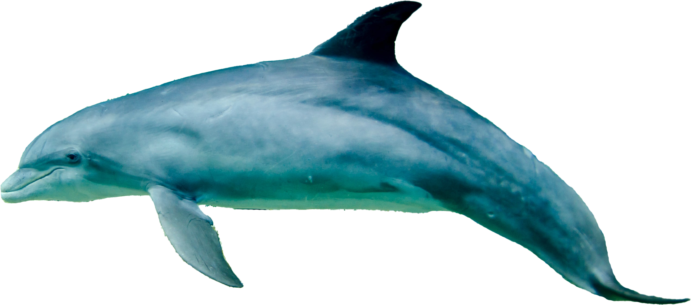
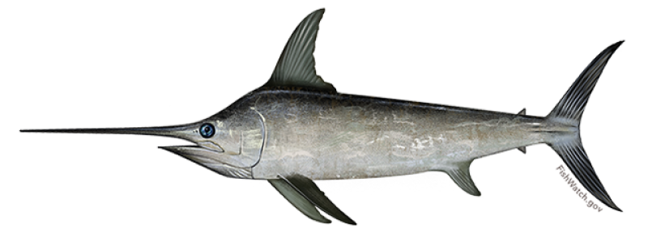
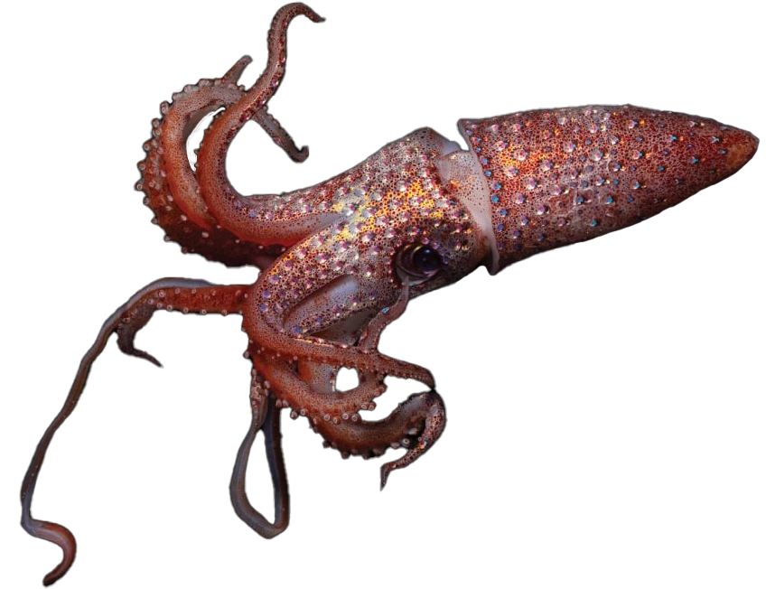
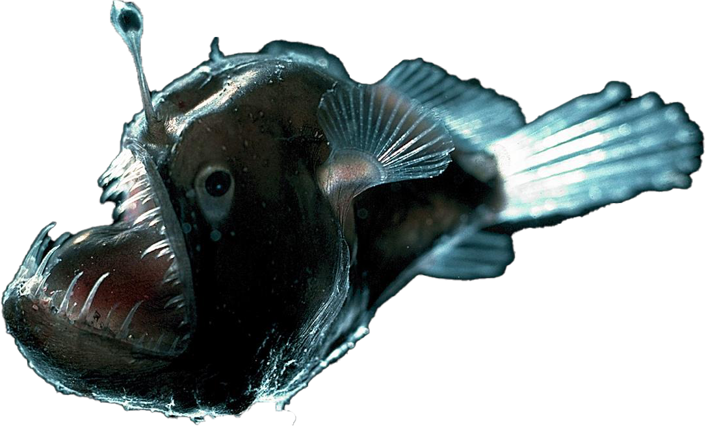
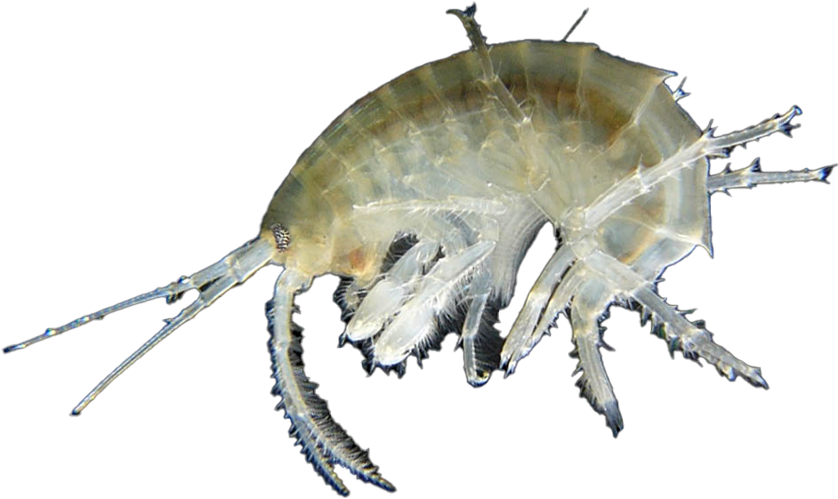

Welcome to the Deep Blue Sea!
We are excited to have you all-aboard our deep sea exploration vessel. We are here to guide you as you discover the weird and wonderful creatures that live in each layer of the ocean. Make sure to take note of each layer and the animals found there for the fun quiz at the end of the page.
Scroll down and start sea-rching!
Epipelagic
This is the surface layer of the ocean. This is also known as the sunlight zone because most of the visible light exists here.

Sea turtles are found in almost every ocean basin in the world. They are vital in maintaining healthy seagrass beds and coral reefs.
Dolphins are marine mammals that are known for their intelligence and communication skills. They use echolocation through whistles and clicking sounds to communicate with each other.

Whales are one of the biggest animals in the world. The blue whale is the largest known animal to have ever existed.
Mesopelagic
Also known as the twilight zone, the light that penetrates to this depth is extremely faint. A great diversity of strange fishes can be found here.
Octopuses have 8 dextrous tentacles that they use to swim and grab prey with. They can regrow their arms if one gets cut off.

Wolf eels get their name from the powerful jaws and canine teeth that they use to crush their prey. These fish are monogamous, meaning they have one mate for the rest of their lives.
Swordfish are large creatures that have a large pointed bill that they use cut prey with. They are known for their great speed and agility in the water.
Bathypelagic
Sometimes referred to as the midnight zone, the only visible light is that produced by the creatures themselves. Most of the animals that live at these depths are black or red in color due to the lack of light.

Voted as the world’s ugliest fish, blobfishes have a droopy look because of the change in pressure they experience when they are caught and brought to the surface.
Squids swim faster than any other invertebrate. They also have 3 hearts, 2 tentacles, and 8 arms.
Anglerfish are characterized by the glowing bulbs on their head that they use to lure prey with. Their bulbs get their glow from luminescent bacteria.
Abyssopelagic
Also known as the abyssal zone or simply as the abyss, the water temperature is near freezing, and there is no light at all. Very few creatures can be found at these crushing depths.

Basket stars have long branching arms and live on the ocean floor. They feed on decomposing organisms that float down from above.

Sea pigs are sea cucumbers that inhabit the deep sea. They protect baby king crabs who ride on their back until they are fully grown.

Sea spiders have extremely long legs compared to their body size. They have adapted to an oxygen-rich environment which allows them to grow their large legs.
Hadalpelagic
These areas are mostly found in deep water trenches and canyons. In spite of the intense pressure and extremely cold temperature, life can still be found here. Invertebrates can thrive at these depths.
Snailfish have skeletons made of cartilage, a kind of tissue that is more flexible than bone, to help them adapt to the immense pressure in their environment.
Amphipods are tiny crustaceans that eat decaying plants and animals. They use their small legs to swim through the water.

Cusk eels are eel-like creatures that are actually not true eels. Unlike true eels, cusk eels have an extra fin on their bottom side that helps them control movement.